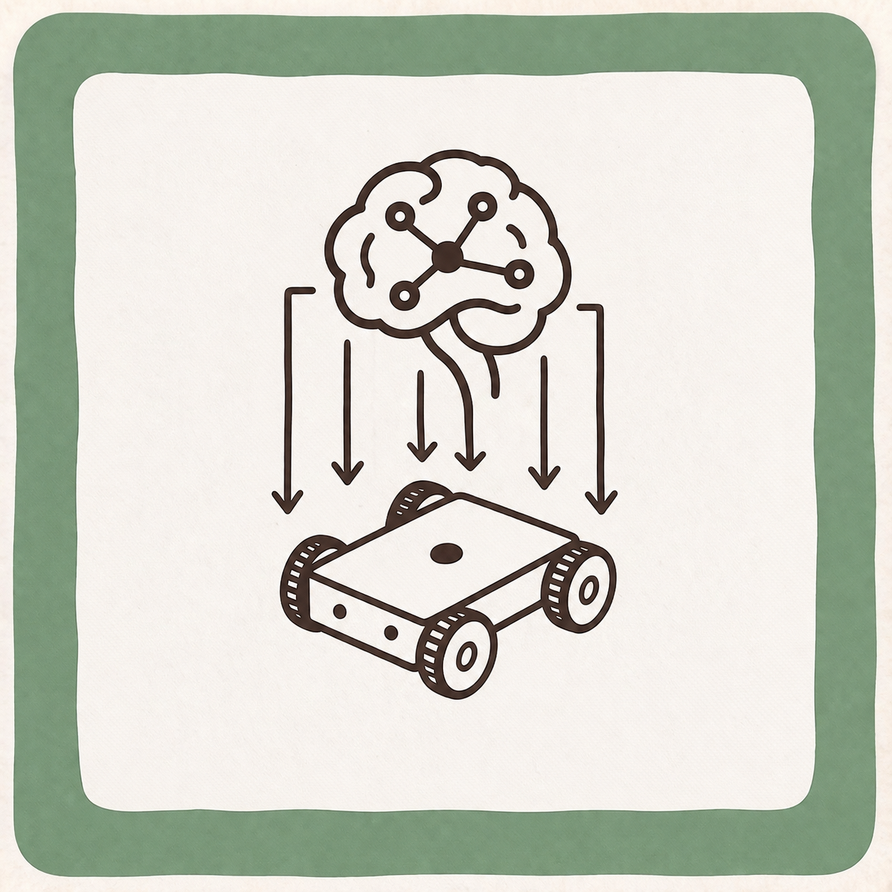

← All research

Localization · Research paper
AI-Driven Dynamic Covariance for ROS 2 Mobile Robot Localization
Published in Sensors 2025, 25, 3026 · doi.org/10.3390/s25103026
{{ stat.value }}
{{ stat.label }}
→{{ h }}
Authors
{{ sec.name }}
{{ sec.body }}
© 2026 SAIM Robotics. All rights reserved.